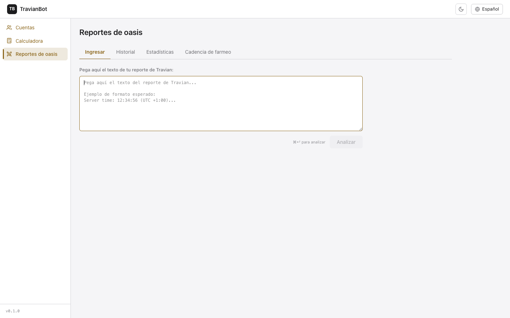
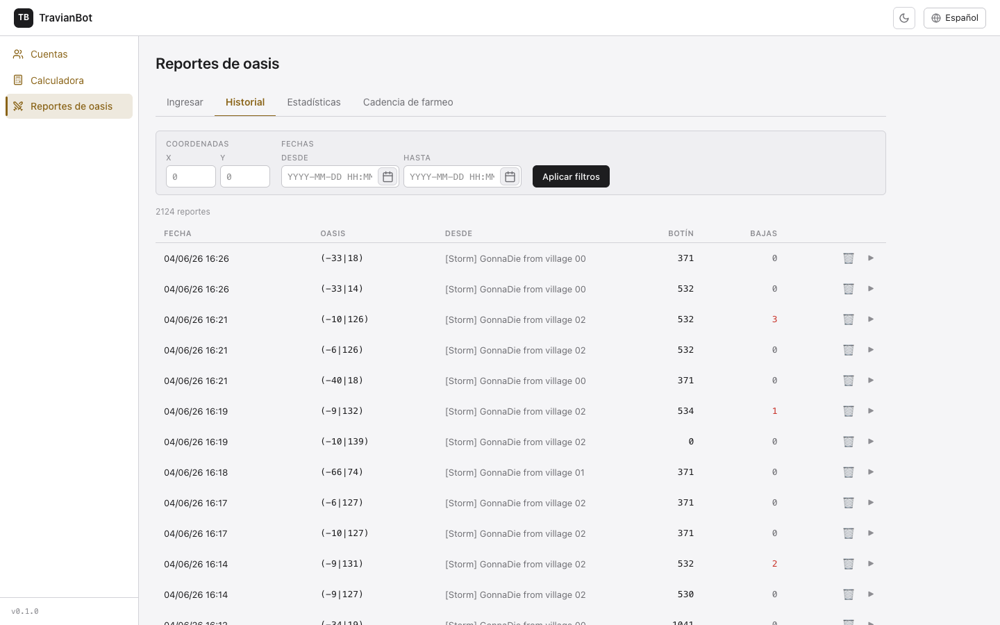
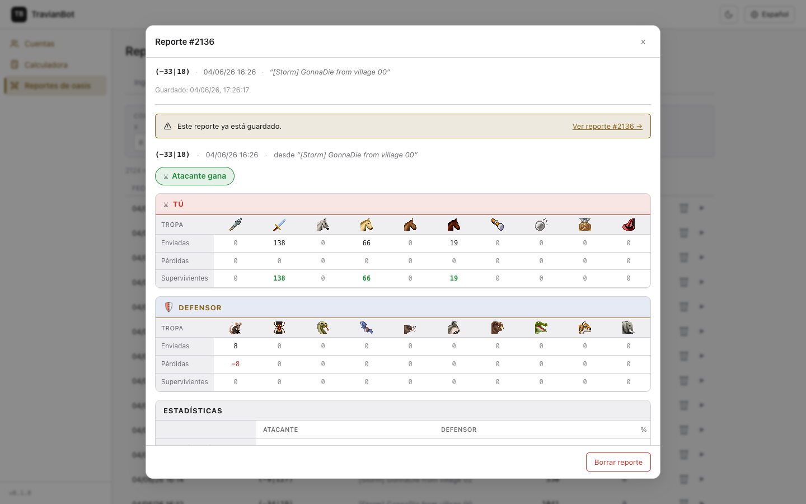
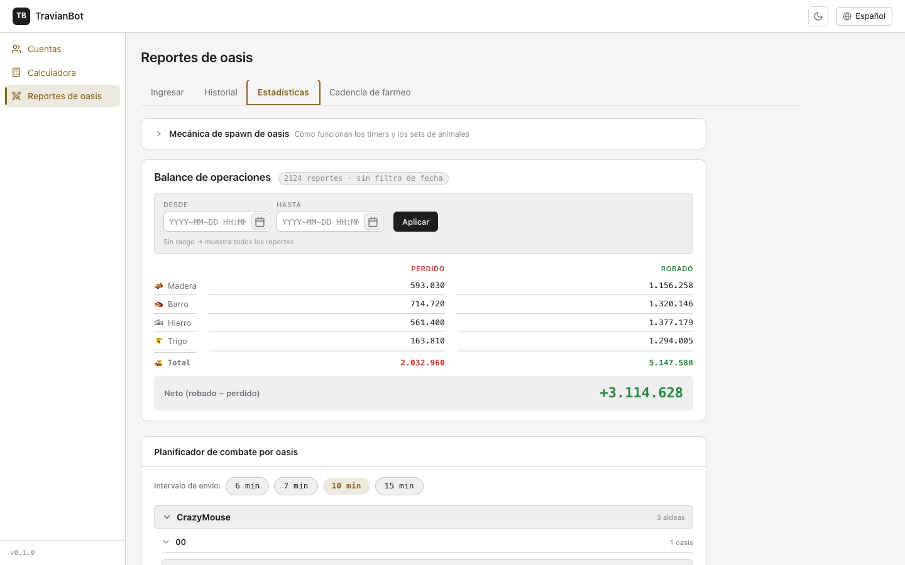
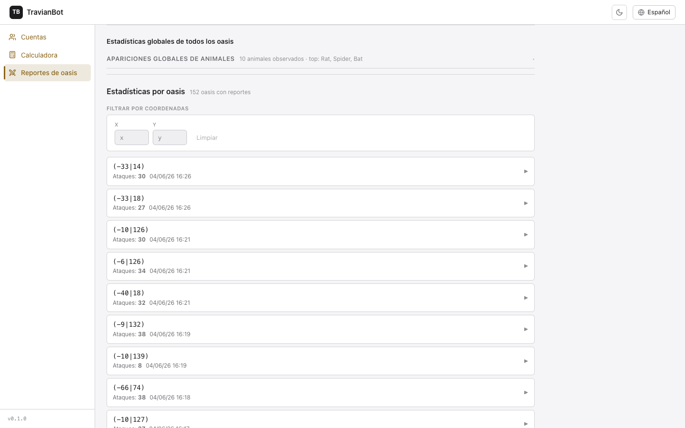
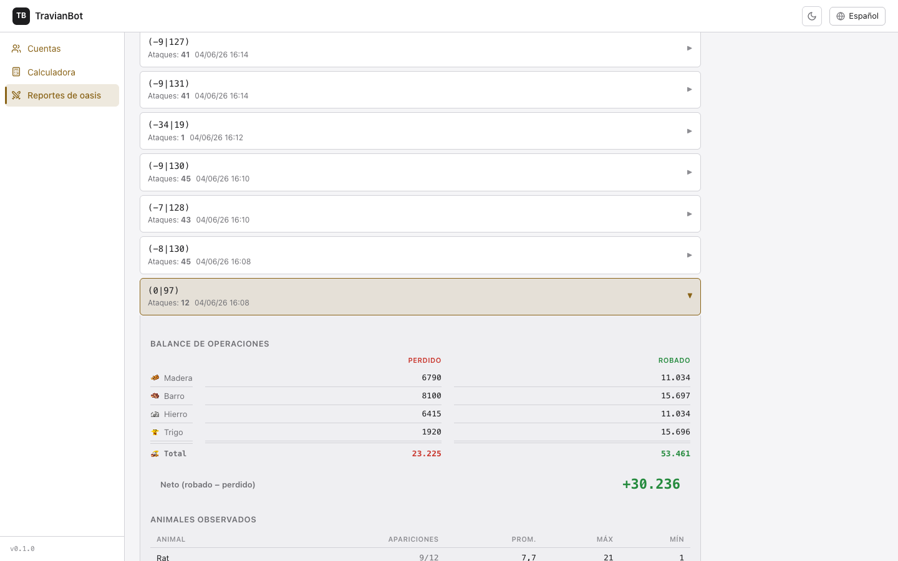
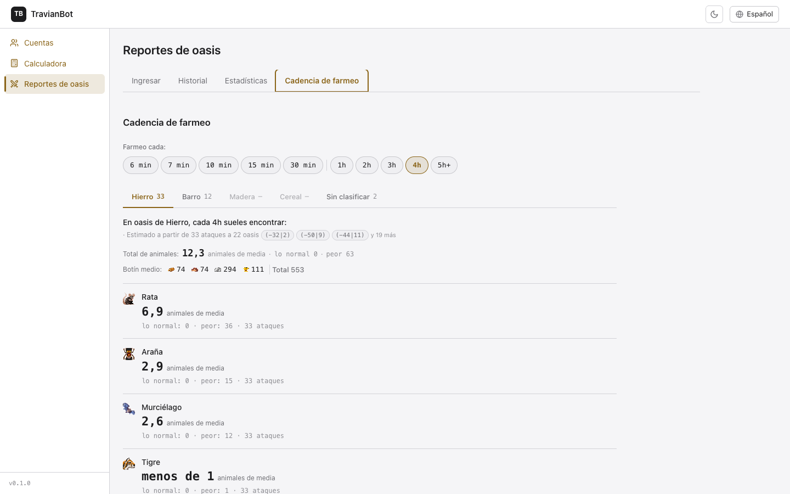

Reportes de ataques a oasis
Acumula tus reportes de Travian para saber qué robas, qué pierdes y qué animales esperar en cada oasis. Solo tienes que pegar el texto del reporte: el bot hace todo lo demás.
1 Las cuatro pestañas
La página "Reportes de oasis" tiene cuatro pestañas. Cada una tiene un propósito distinto:

| Pestaña | Para qué sirve | Cuándo usarla |
|---|---|---|
| Ingresar | Pegar el texto de un reporte de Travian para analizarlo y guardarlo | Cada vez que tienes un reporte nuevo que quieres añadir a la base de datos |
| Historial | Ver la lista de todos los reportes guardados, filtrarlos y abrirlos | Para revisar ataques pasados, buscar uno concreto o borrar uno erróneo |
| Estadísticas | Ver el balance global de operaciones, la composición típica de cada oasis y las estadísticas globales | Para tomar decisiones sobre qué oasis atacar y con qué equipo |
| Cadencia de farmeo | Ver qué animales esperar según la frecuencia con la que atacas | Para calibrar el equipo de tropas según tu ritmo de envío |
2 Ingresar un reporte
Esta es la puerta de entrada de todos los datos. No hay formularios complicados: simplemente copia el texto del reporte en Travian y pégalo aquí.

Cómo pegar un reporte paso a paso
- Ve a Travian, abre un reporte de ataque a un oasis (el defensor debe ser animales Nature: ratas, arañas, lobos, etc.).
- Selecciona todo el texto del reporte con
Ctrl+A(oCmd+A) y cópialo conCtrl+C. - En TravianBot, haz clic en la pestaña Ingresar.
- Haz clic en el área de texto gris y pega el reporte con
Ctrl+V(oCmd+V). - Pulsa el botón Analizar (o usa el atajo
⌘↵/Ctrl+Enter). El bot analizará el texto automáticamente. - Revisa el preview que aparece: muestra las tropas, los animales, el botín y el coste de las bajas.
- Si todo se ve correcto, pulsa Guardar. Listo.
El bot detecta el idioma del reporte automáticamente (español, inglés, alemán y 22 idiomas más). No necesitas indicar el idioma.
Solo se aceptan reportes de ataques a oasis de animales. Los reportes de ataques a aldeas o de defensa no son compatibles.
Si el reporte ya existe
Si pegas un reporte que ya está guardado, el sistema lo detecta durante el análisis y muestra un aviso en dorado: "Este reporte ya está guardado." con un enlace al reporte existente. En ese caso no hace falta guardar de nuevo.
Si el reporte se perdió (cantidades con "?")
A veces en Travian el atacante pierde la batalla y el reporte muestra "?" en lugar de las cantidades de animales. El sistema acepta este tipo de reportes: los guarda con los datos que tiene (tropas enviadas, coordenadas, hora) y marca las cantidades de animales como desconocidas.
3 Historial
La pestaña Historial muestra todos los reportes guardados ordenados del más reciente al más antiguo.
Columnas de la tabla
| Columna | Qué muestra |
|---|---|
| Fecha | Hora local del servidor de Travian en el momento del ataque (formato DD/MM/AA HH:MM) |
| Oasis | Coordenadas del oasis atacado en formato (X|Y) |
| Desde | Nombre de la aldea desde la que se lanzó el ataque |
| Botín | Suma total de recursos robados (madera + barro + hierro + trigo) |
| Bajas | Número de tropas atacantes perdidas. En rojo si > 0. |
| Acciones | Icono de papelera (borrar) e icono de play (ver detalle) |
Filtrar el historial
La barra de filtros al principio de la pestaña Historial permite acotar los reportes mostrados:

| Filtro | Cómo funciona |
|---|---|
| Coordenadas X e Y | Filtra solo los reportes del oasis en esas coordenadas. Ambos campos son obligatorios si usas este filtro. |
| Desde / Hasta | Rango de fechas en formato YYYY-MM-DD HH:MM:SS. También puedes usar el botón de calendario para seleccionar el rango visualmente. |
Pulsa Aplicar filtros para ver solo los reportes que coinciden. El contador "N reportes" se actualiza para reflejar el número de resultados.
Ver el detalle de un reporte
Haz clic en cualquier fila de la tabla (o en el botón "▶" al final de la fila) para abrir el detalle completo del reporte.

El botón Borrar reporte al pie del detalle elimina el reporte definitivamente. Esta acción no se puede deshacer.
4 Estadísticas
La pestaña Estadísticas concentra todo el análisis útil para decidir cómo y cuándo atacar. Se divide en cinco paneles, cada uno con información independiente.
Panel: Balance de operaciones
Es el primer panel que ves al abrir Estadísticas. Compara lo que has perdido (valor en recursos de las tropas muertas) con lo que has robado (botín + inventario del héroe).

Puedes filtrar el balance por rango de fechas usando los campos Desde y Hasta. Esto te permite ver la rentabilidad de un período concreto (esta semana, este mes, etc.).
Si ves la nota "N reportes sin tribu identificada", significa que para esos reportes el bot no pudo calcular el coste de las tropas perdidas (no conoce la tribu del atacante). El balance de "Perdido" puede estar subestimado.
Panel: Planificador de combate por oasis
Justo debajo del balance encontrarás el planificador de combate. Este panel ya está documentado en detalle en el Manual de mecánica de spawn. Selecciona el intervalo de envío y el panel muestra qué equipo necesitas para cada oasis.
Panel: Estadísticas globales
Muestra las estadísticas de todos los oasis combinados: qué animales aparecen más frecuentemente, cuántas veces se ha observado cada especie y su tasa de regeneración media.

Panel: Estadísticas por oasis individual
Haz clic en cualquier oasis de la lista para ver sus estadísticas detalladas: qué animales han aparecido en ese oasis, cuántas veces, el balance propio de ese oasis y el historial de regeneración.

5 Cadencia de farmeo
La pestaña Cadencia de farmeo responde a la pregunta: "Si ataco cada X minutos, ¿cuántos animales suelo encontrar?" Los datos se basan en tus propios reportes históricos, agrupados según el tipo de oasis.

Cómo usar el selector de intervalo
Usa los botones de la fila "Farmeo cada:" para elegir tu cadencia habitual de ataque: 6 min, 7 min, 10 min, 15 min, 30 min, 1 h, 2 h, 3 h, 4 h o 5h+.
El sistema selecciona solo los reportes donde el tiempo entre dos ataques consecutivos al mismo oasis coincide con ese intervalo. Así las estadísticas son representativas de lo que encuentras cuando atacas a esa cadencia.
Pestañas por tipo de oasis
Los oasis se agrupan por tipo (Hierro, Barro, Madera, Cereal, Sin clasificar). El número junto al nombre indica cuántos reportes hay en esa categoría para el intervalo seleccionado. Las pestañas en gris con guion indican que no hay datos suficientes en ese intervalo.
| Tipo | Animales típicos |
|---|---|
| Hierro | Rata, Araña, Murciélago |
| Barro | Rata, Araña, Jabalí |
| Madera | Jabalí, Lobo, Oso |
| Cereal | Todos (Rata hasta Elefante) |
Qué muestran las estadísticas de cada animal
Por cada animal de la sección se muestra:
- Media de animales — promedio de cuántos de esa especie encuentras en ese intervalo.
- Lo normal — la moda (el número más frecuente que aparece en los reportes).
- Peor — el máximo observado: cuántos encontraste en el peor ataque registrado.
- N ataques — cuántos reportes contribuyen a esas estadísticas.
Usa "Peor" para dimensionar el equipo. Si el peor caso para Rata en tu intervalo habitual es 36, asegúrate de que tus tropas puedan liquidar 36 ratas sin bajas.
6 Referencia rápida: qué hacer cuando...
| Situación | Qué hacer |
|---|---|
| Quiero añadir un reporte nuevo | Pestaña Ingresar → pegar texto → Analizar → Guardar |
| El sistema dice "Reporte ya guardado" | Ya tienes ese reporte. El enlace dorado te lleva al reporte existente. |
| El sistema rechaza el reporte con error | Comprueba que has copiado todo el texto del reporte (incluida la línea "Server time"). Solo se aceptan ataques a oasis de animales Nature. |
| Quiero ver qué pasó en un oasis concreto | Pestaña Historial → filtrar por coordenadas X e Y |
| Quiero saber si mis operaciones de oasis son rentables | Pestaña Estadísticas → sección "Balance de operaciones" |
| Quiero calibrar el equipo para un oasis | Pestaña Estadísticas → sección "Planificador de combate" → seleccionar intervalo. Ver también el Manual de mecánica de spawn. |
| Quiero saber cuántos animales esperar según mi cadencia | Pestaña Cadencia de farmeo → seleccionar el intervalo → ver la pestaña del tipo de oasis |
| Quiero borrar un reporte incorrecto | Pestaña Historial → abrir el reporte → botón "Borrar reporte" |